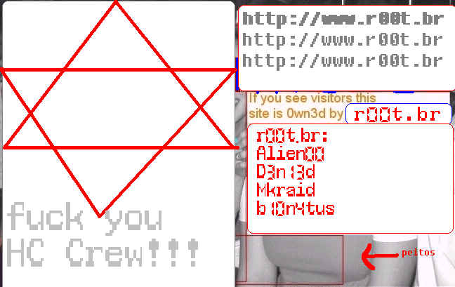

s0rry.
r00t.br 0wn3d y0u!
leia......
A ilusao do sufragio universal
Os homens acreditavam que o
estabelecimento do sufrágio universal garantia a liberdade dos povos. Mas infelizmente
esta era uma grande ilusão e a compreensão da ilusão, em muitos lugares, levou à queda
e à desmoralização do partido radical. Os radicais não queriam enganar o povo, pelo
menos assim asseguram as obras liberais, mas neste caso eles próprios foram enganados.
Eles estavam firmemente convencidos quando prometeram ao povo a liberdade através do
sufrágio universal. Inspirados por essa convicção, eles puderam sublevar as massas e
derrubar os governos aristocráticos estabelecidos. Hoje depois de aprender com a
experiência, e com a política do poder, os radicais perderam a fé em si mesmos e em
seus princípios derrotados e corruptos. Mas tudo parecia tão natural e tão simples: uma
vez que os poderes legislativo e executivo emanavam diretamente de uma eleição popular,
não se tornariam a pura expressão da vontade popular e não produziriam a liberdade e o
bem estar entre a população?
Toda decepção com o sistema representativo está na ilusão de que um governo e uma
legislação surgidos de uma eleição popular deve e pode representar a verdadeira
vontade do povo. Instintiva e inevitavelmente, o povo espera duas coisas: a maior
prosperidade possível combinada com a maior liberdade de movimento e de ação. Isto
significa a melhor organização dos interesses econômicos populares, e a completa
ausência de qualquer organização política ou de poder, já que toda organização
política se destina à negação da liberdade. Estes são os desejos básicos do povo. Os
instintos dos governantes, sejam legisladores ou executores das leis, são diametricamente
opostos por estarem numa posição excepcional.
Por mais democráticos que sejam seus sentimentos e suas intenções, atingida uma certa
elevação de posto, vêem a sociedade da mesma forma que um professor vê seus alunos, e
entre o professor e os alunos não há igualdade. De um lado, há o sentimento de
superioridade, inevitavelmente provocado pela posição de superioridade que decorre da
superioridade do professor, exercite ele o poder legislativo ou executivo. Quem fala de
poder político, fala de dominação. Quando existe dominação, uma grande parcela da
sociedade é dominada e os que são dominados geralmente detestam os que dominam, enquanto
estes não têm outra escolha, a não ser subjugar e oprimir aqueles que dominam. Esta é
a eterna história do saber, desde que o poder surgiu no mundo. Isto é, o que também
explica como e porque os democratas mais radicais, os rebeldes mais violentos se tornam os
conservadores mais cautelosos assim que obtêm o poder. Tais retratações são geralmente
consideradas atos de traição, mas isto é um erro. A causa principal é apenas a
mudança de posição e, portanto, de perspectiva.
Na suíça, assim como em outros lugares, a classe governante é completamente diferente e
separada da massa dos governados. Aqui, apesar da constituição política ser
igualitária, é a burguesia que governa, e é o povo, operários e camponeses, que
obedecem suas leis. O povo não tem tempo livre ou educação necessária para se ocupar
do governo. Já que a burguesia tem ambos, ela tem de ato, se não por direito,
privilégio exclusivo. Portanto, na Suíça, como em outros países a igualdade política
é apenas uma ficção pueril, uma mentira.
Separada como está do povo, por circunstâncias sociais e econômicas, como pode a
burguesia expressar, nas leis e no governo, os sentimentos, as idéias, e a vontade do
povo? É possível, e a experiência diária prova isto. Na legislação e no governo, a
burguesia é dirigida principalmente por seus próprios interesses e preconceitos, sem
levar em conta os interesses do povo. É verdade que todos os nossos legisladores, assim
como todos os membros dos governos cantonais são eleitos, direta ou indiretamente, pelo
povo.
É verdade que, em dia de eleição, mesmo a burguesia mais orgulhosa, se tiver ambição
política, deve curvar-se diante de sua Majestade, a Soberania Popular. Mas, terminada a
eleição, o povo volta ao trabalho, e a burguesia, a seus lucrativos negócios e às
intrigas políticas. Não se encontram e não se reconhecem mais. Como se pode esperar que
o povo, oprimido pelo trabalho e ignorante da maioria dos problemas, supervisione as
ações de seus representantes? Na realidade, o controle exercido pelos eleitores aos seus
representantes eleitos é pura ficção, já que no sistema representativo, o controle
popular é apenas uma garantia da liberdade do povo, é evidente que tal liberdade não é
mais do que ficção.
gr33tz: r00t Shell
fuckz: HC crew sux....
(b10n4tus, mkraid, d3n13d, alien00)